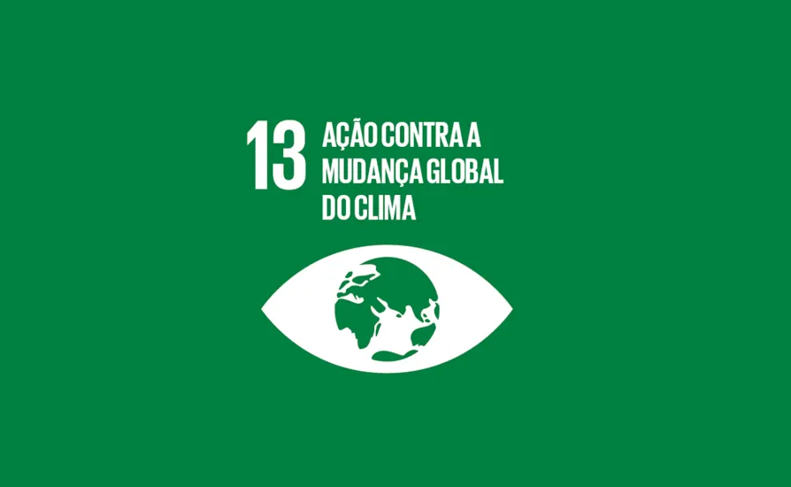
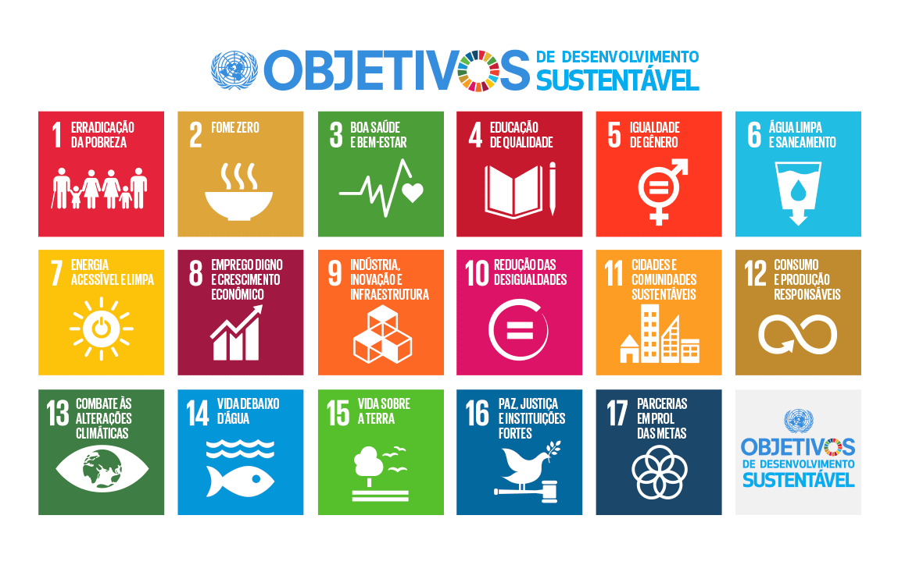
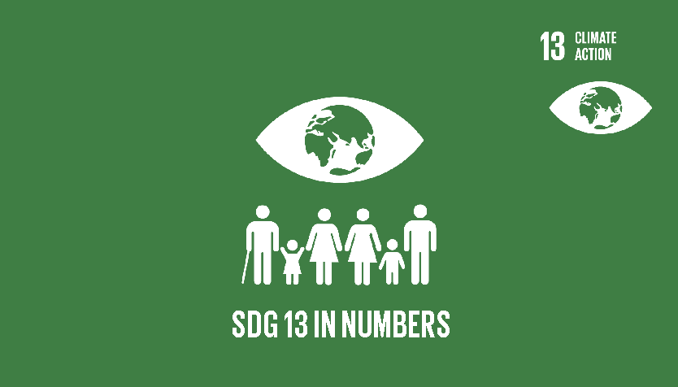
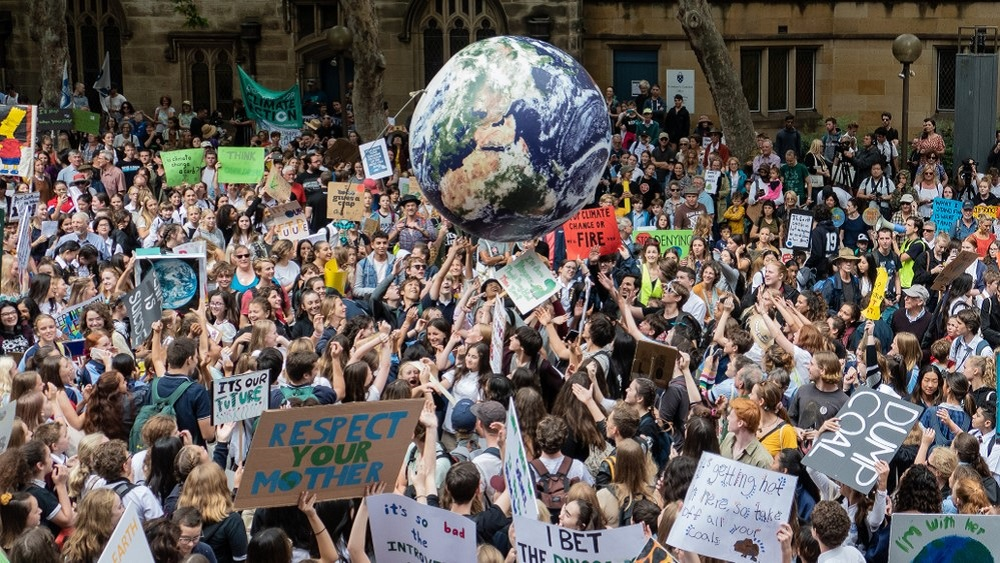
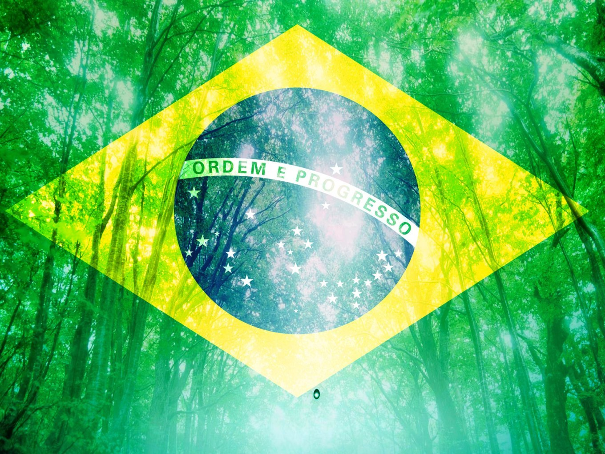

Combate às mudanças climáticas: o que significa o 13° objetivo dos ODS
da ONU?
O combate às mudanças climáticas corresponde ao 13° dos Objetivos de
Desenvolvimento Sustentável (ODS) criados pela Organização das Nações
Unidas (ONU)

O
combate às mudanças climáticas
corresponde ao 13° dos Objetivos de Desenvolvimento Sustentável (ODS)
criados pela Organização das Nações Unidas (ONU) para cumprir com os
acordos feitos na Agenda 2030. Seu princípio consiste em “tomar
medidas urgentes para combater as
mudanças climáticas e seus impactos”.
As mudanças climáticas são um evento transnacional,
cujos impactos estão desregulando economias nacionais e afetando
pessoas em todos os lugares do mundo, principalmente aquelas em
situação de vulnerabilidade nos países em desenvolvimento. Sem a ação
imediata frente à mudança do clima, a temperatura terrestre está
projetada para aumentar mais de 3 ºC até o final do século XXI.
O ODS reconhece que a Convenção Quadro das Nações Unidas sobre Mudança
do Clima (UNFCCC) é o fórum internacional intergovernamental primário
para negociar a resposta global à mudança do clima. Conter o
aquecimento global
e o derretimento das calotas polares são dois dos focos.
Objetivos de Desenvolvimento Sustentável

Os 193 países membros da Organização das Nações Unidas (ONU) têm
orientado suas decisões seguindo uma nova agenda: são os Objetivos de
Desenvolvimento Sustentável (ODS). Lançada em setembro de 2015,
durante a Cúpula de Desenvolvimento Sustentável, na Assembleia Geral
da ONU, a agenda é composta por 17 itens – tais como
erradicar a pobreza,
a fome
e
assegurar educação inclusiva
– que devem ser implementados por todos os países do mundo até 2030.
Os Estados e a sociedade civil discutiram seus papéis para atingir os
17 novos Objetivos de Desenvolvimento Sustentável (ODS). Os ODS foram
baseados nos oito Objetivos de Desenvolvimento do Milênio (ODM), que
estabeleciam metas para o período entre 2000 e 2015 e obtiveram
avanços consideráveis na redução da pobreza global, no acesso à
educação e à
água potável. A ONU considerou os Objetivos do Milênio um sucesso e propôs dar
continuidade ao trabalho já realizado, traçando novas metas para os
próximos 15 anos. Surgiram assim os Objetivos de Desenvolvimento
Sustentável.
O que são mudanças climáticas?
Mudanças climáticas
são as variações climáticas na temperatura, precipitação e
nebulosidade em escala global. Elas podem ser causadas por fatores
naturais, como as alterações na
radiação solar
ou movimentos da órbita da Terra. Porém, o Painel Intergovernamental
sobre Mudanças Climáticas (IPCC) afirma que existem estudos
científicos que comprovam que o aumento da temperatura no planeta está
sendo provocado pela ação humana ao longo dos últimos 250 anos.
As mudanças climáticas já apresentam efeitos
ambientais observáveis. Geleiras encolheram, gelos em rios e lagos
quebram mais cedo, variedades de plantas e animais mudaram e árvores
passaram a florescer mais cedo. Cientistas previram efeitos que seriam
resultantes das mudanças climáticas no mundo e que agora estão
acontecendo, tais como a perda do gelo nos oceanos, aumento acelerado
do
nível do mar, e ondas de frio e calor mais intensas.
Os cientistas acreditam também que as temperaturas globais continuarão
a aumentar nas próximas décadas, em grande parte devido aos
gases do efeito estufa
produzidos por atividades humanas. O IPCC, que inclui mais de 1.300
cientistas dos Estados Unidos e outros países, prevê um aumento de
temperatura de 2,5 °C a 10 °C durante o próximo século.
De acordo com essa mesma instituição, os efeitos das alterações
climáticas serão diferentes para cada região, dependendo da capacidade
de cada sistema social e ambiental para mitigar ou se adaptar às
mudanças.
Metas do ODS 13

13.1 Reforçar a resiliência e a capacidade de adaptação a riscos
relacionados ao clima e às catástrofes naturais em todos os países;
13.2 Integrar medidas da mudança do clima nas políticas, estratégias
e planejamentos nacionais;
13.3 Melhorar a educação, aumentar a conscientização e a capacidade
humana e institucional sobre mitigação da mudança do clima,
adaptação, redução de impacto e alerta precoce à mudança do clima;
13.a Implementar o compromisso assumido pelos países desenvolvidos
partes da Convenção Quadro das Nações Unidas sobre Mudança do Clima
(UNFCCC) para a meta de mobilizar conjuntamente US$ 100 bilhões por
ano a partir de 2020, de todas as fontes, para atender às
necessidades dos países em desenvolvimento, no contexto das ações de
mitigação significativas e transparência na implementação; e
operacionalizar plenamente o Fundo Verde para o Clima, por meio de
sua capitalização, o mais cedo possível;
13.b Promover mecanismos para a criação de capacidades para o
planejamento relacionado à mudança do clima e à gestão eficaz, nos
países menos desenvolvidos, inclusive com foco em mulheres, jovens,
comunidades locais e marginalizadas.
Como evitar as mudanças climáticas?

Ajudar regiões mais vulneráveis, assim como países sem saída para o
mar, países menos desenvolvidos e pequenas ilhas em desenvolvimento a
se adaptarem à mudança do clima deve ser compromisso fundamental nos
esforços para integrar políticas de redução de desastres em
estratégias nacionais.
Algumas ações de precaução contra as
mudanças climáticas são a redução das emissões de
gases do efeito estufa e os efeitos no
aquecimento global. A diminuição do desmatamento, investimentos no reflorestamento e na
conservação de áreas naturais, incentivo do uso de
energias renováveis
não convencionais, preferências pela utilização de biocombustíveis a
combustíveis fósseis, investimentos na redução do consumo de energia e na eficiência
energética, redução, reaproveitamento e
reciclagem
de materiais, investimentos em tecnologias de baixo carbono, melhorias
no transporte público com baixa emissão de gases do efeito estufa
também são algumas das possibilidades. E estas medidas podem ser
estabelecidas por meio de políticas nacionais e internacionais de
clima.
Como estão os avanços no Brasil?

Quanto à legislação, em 2009, no Brasil, foi instituída a Política
Nacional sobre a Mudança do Clima (PNMC), por meio da Lei nº
12.187/2009, que mostrava o compromisso do país em reduzir as emissões
de gases do efeito estufa entre 36,1% e 38,9% das emissões projetadas
até 2020. Alguns instrumentos utilizados para a execução do PNMC são o
Plano Nacional sobre Mudança do Clima, o Fundo Nacional sobre Mudança
do Clima e a Comunicação do Brasil à Convenção-Quadro das Nações
Unidas sobre Mudança do Clima.
O Plano Nacional sobre Mudança do Clima, por exemplo, apresenta
algumas metas e objetivos que se reverterão na redução de emissões de
gases do efeito estufa, além de outros ganhos ambientais e benefícios
socioeconômicos, que você pode conferir na página do Ministério do
Meio Ambiente (MMA).